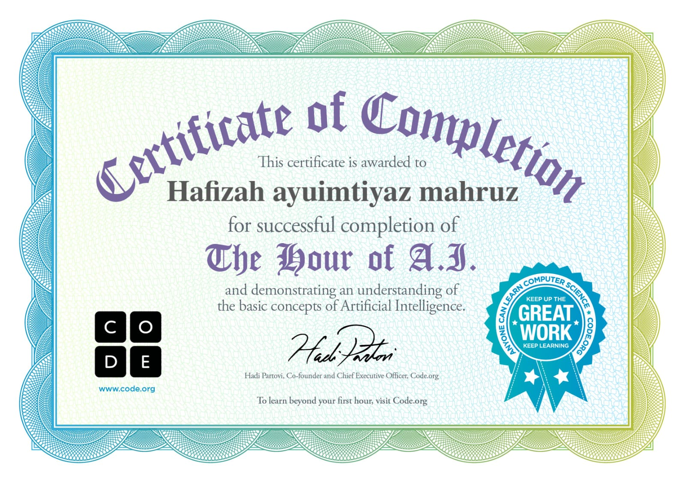

Daftar Isi............................................................
Bab I Pendahuluan............................................
1. Latar Belakang...................................................
Bab II Pembahasan............................................
1. sejarah handphone.............................................
2. Sejarah Perkembangan hp.................................
3.Dampak Perkembangan Teknologi Handphone
Bab III Penutup.................................................
Tulisan ini berısı bacaan mengenai sebuah teknologi yang mungkin sudah tidak asing lagı bagi semua orang karena teknologi ini semakin berkembang seiring dengan perkembangan jaman.Bahkan penggunanyapun tidak terlalu sulit untuk menggunakannya, akan tetapi akan lebih baik apabila kita mengetahui dan mengerti asal mula munculnya PERANGKAT handphone ini, dan juga kekurangannya.Dalam tulisan ini telah diterangkan perkembangan teknologi yang mendasarı terciptanya perangkat selular Hand Phone, dan berbagai materi yang singkat tetapi kaya akan informası yang akan lebih baik apabila dibaca sendiri oleh pembaca. Sekiranya tulisan ini dapat menjadi bahan penambah wawasan
SEJARAH HANDPHONE
Handphone berawal dari penemuan oleh Martin Cooper pada tahun 1973 dengan model Motorola DynaTAC yang pertama kali dikomersialkan sebagai ponsel generasi pertama (1G) pada 1983. Perkembangannya berlanjut melalui generasi-generasi berikutnya, dari 2G yang berbasis sinyal digital, 3G yang membawa fasilitas internet, hingga 4G dan 5G yang canggih, memungkinkan fitur-fitur seperti kamera, layar sentuh, dan sistem operasi modern, menghasilkan smartphone seperti yang kita kenal sekarang.
- Lahirnya Ponsel Pertama
• 1973: Martin Cooper dari Motorola menciptakan perangkat yang dianggap sebagai telepon bergerak pertama, yaitu model Motorola DynaTA.
• 1983: Motorola meluncurkan DynaTAC 8000X, ponsel pertama yang secara resmi dikomersialkan dan bisa digunakan masyarakat.
Handphone merupakan salah satu dari produk iptek yang canggih dewasa ini. Hal ini dikarenakan handphone mampu mengakses informası yang ada di seluruh penjuru dunia. dalam waktu yang relatif singkat dan hampir bersamaan serta biaya yang relatif murah. handphone dapat menimbulkan dampak positif dan negatif terhada prestası belajar siswa. Upaya yang mungkin dapat diterapkan terhadap dampak negatif yang ditimbulkan handphone antara lain yaitu profesionalisme guru di dalam pembelajaran, adanya pelarangan penggunaan handphone ketika proses kegiatan belajar mengajar berlangsung, peran serta orang tua dan masyarakat sangat membantu perkembangan prestası belajar siswa. kesadaran dari setiap siswa mengenai manfaat penggunaan handphone dan efek penggunaan handphone yang dapat menunjang prestasi belajar
